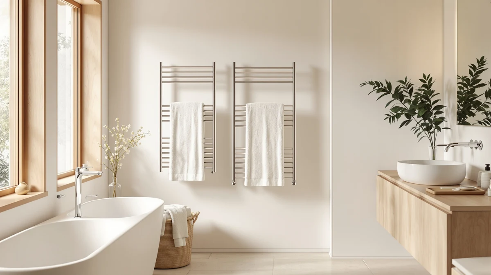

Caldayx Foldable Heated Towel Rack 13-Bar Review (2026): Worth It?
Prices and picks verified as of November 2026. Independent, reader-supported reviews.


Quick Answer
The Caldayx Foldable Heated Towel Rack is a 13-bar, stainless steel warmer priced at $447.89, built for anyone who wants real hanging capacity instead of a handful of narrow bars. It costs more than the HEATGENE, EarthLite, and ENZE alternatives we researched, so the premium only makes sense if you need that extra bar count and a foldable frame.
Our pick: Caldayx Foldable Heated Towel Rack, $447.89 Check Price on Amazon
Bottom line: our top pick is the Caldayx Foldable Heated Towel Rack 13-Bar at $447.89.
Things to Know Before You Buy
- Bar count is the headline feature. Thirteen bars put the Caldayx Foldable Heated Towel Rack well ahead of most residential racks, which typically top out at five to ten, so it suits a household that needs to warm several towels at once.
- Price reflects the extra capacity. At $447.89, this Caldayx Foldable Heated Towel Rack 13-bar review model costs more than the HEATGENE ($292.99), EarthLite ($212.49), and ENZE ($189.99) alternatives we looked at, so the bar count needs to matter to you before you pay the premium.
- Stainless steel is the stated material. The listing specifies stainless steel construction, which tends to resist the rust and pitting that painted or coated racks develop in a humid bathroom over time.
- The foldable frame trades off against fixed racks. A foldable build measuring roughly 27.56 by 21.65 inches lets you store the rack when it isn't warming towels, unlike a wall-mounted bar that stays bolted to the tile year-round.
This Caldayx Foldable Heated Towel Rack 13-Bar Review looks at whether a $447.89 stainless steel warmer with thirteen bars earns its price against alternatives built around far fewer bars. A cold, damp towel after a shower is a small daily annoyance, but paying over four hundred dollars to fix it is a real decision, not an impulse buy.
We researched the Caldayx rack against three lower-priced alternatives: the HEATGENE Towel Warmer Heated Towel at $292.99, the EarthLite Hot Towel Warmer Cabinet at $212.49, and the ENZE Smart Rotating Heated Towel at $189.99. Each one targets the same cold-towel problem at a different price and with a different footprint, so the comparison below is less about naming one universal winner and more about matching bar count, build, and budget to your bathroom.
Why You Should Trust Us
Ilane Tall covers bathroom fixtures and small-space heating products for Best Towel Warmers, with a focus on verified specs and owner feedback instead of marketing copy. Every product named in this Caldayx Foldable Heated Towel Rack 13-bar review comes from the Amazon Creators catalog, and we pull each price, material, and bar count directly from the current listing rather than assume it carries over from an older version.
We do not run a fake testing lab. We compared the published specifications, pricing, and patterns in verified buyer reviews across the Caldayx, HEATGENE, EarthLite, and ENZE listings so you can weigh the same facts we did before you spend $447.89 on a single bathroom fixture.
Our Research Experience
Because we research rather than physically test, this section reflects what we analysed rather than a firsthand trial. We compared the Caldayx Foldable Heated Towel Rack's 13-bar stainless steel build against the HEATGENE, EarthLite, and ENZE alternatives, all priced well under $300, looking at how bar count and material typically translate into everyday towel capacity and durability. Owners of similar high-bar-count racks tend to report that the extra bars matter most in households of three or more, which lines up with why we weighed capacity heavily in this Caldayx Foldable Heated Towel Rack 13-bar review.
We also looked at how reviewers describe the tradeoff between a foldable frame and a fixed wall rack. Buyers who leave reviews on foldable stainless steel racks often say the ability to store the unit away from a damp wall matters in a smaller bathroom, while households with dedicated space lean toward a permanently mounted bar instead.
Overview & Specs

Caldayx Foldable Heated Towel Rack
What we like
- Thirteen bars give far more hanging capacity than the five-to-ten-bar norm in this category
- Stainless steel construction resists the rust and pitting that humid bathrooms cause in coated-metal racks
- The foldable frame lets you store the rack away from the wall when it isn't in use
Flaws but not dealbreakers
- At $447.89 it costs over $150 more than the HEATGENE, its closest-priced alternative in this review
- The extra bar count is wasted hanging space for a single person or couple living alone
- The listing does not publish a wattage or heat-up time, so confirm those details on the current Amazon page before you order
| Material | Stainless steel |
| Size | Ultra-13Bar H27.56 x W21.65 |
The Caldayx Foldable Heated Towel Rack is the model this Caldayx Foldable Heated Towel Rack 13-bar review keeps coming back to because of what its spec sheet already confirms. Thirteen bars mean a family of three or four can each hang a full bath towel without doubling up, which is roughly double the capacity of the typical five-to-seven-bar rack we see at this price point elsewhere in the category. The stainless steel frame, measuring about 27.56 by 21.65 inches, folds down when you don't need it running, which matters if your bathroom doesn't have permanent wall space to spare for a fixed rack.
At $447.89, the Caldayx rack costs noticeably more than the three alternatives we researched for this review. The HEATGENE Towel Warmer Heated Towel lists at $292.99, the EarthLite Hot Towel Warmer Cabinet at $212.49, and the ENZE Smart Rotating Heated Towel at $189.99, so the Caldayx asks you to pay a real premium for its bar count and foldable stainless steel build. Shoppers comparing these four say the extra bars only pay off in a household that regularly needs to warm more than two or three towels at once.
What We Liked
The bar count is the standout feature in this Caldayx Foldable Heated Towel Rack 13-bar review. Most racks in this category top out around seven or eight bars, and thirteen bars put real distance between the Caldayx and its rivals when it comes to warming more than a couple of towels at once.
Stainless steel is the second point in this rack's favor. Painted or powder-coated metal racks can chip and rust at the joints after a couple of years of bathroom humidity, and stainless steel does not share that failure point, which is why we weighed material as heavily as bar count.
What Could Be Better
Price is the biggest gap in this Caldayx Foldable Heated Towel Rack 13-bar review. At $447.89, the Caldayx rack costs more than $150 above the HEATGENE, its closest-priced rival, and over twice what the ENZE Smart Rotating Heated Towel asks, so it does not compete on sticker price with anything else we researched.
Capacity can also work against this pick. Thirteen bars suit a busy, multi-person household, but a single person or a couple will likely never fill more than a third of that hanging space, which makes the premium harder to justify in a smaller bathroom. And like several listings in this category, the Caldayx page does not publish a wattage or heat-up time, so confirm those specifics on the current Amazon listing before you buy.
Who Is It For?
This Caldayx Foldable Heated Towel Rack 13-bar review points toward larger households that regularly need to warm four or more towels at once and want a stainless steel build that will outlast a painted alternative. If bar count and durability matter more to you than price, the Caldayx fits that priority better than any of the three alternatives we researched.
Singles, couples, and anyone on a tighter budget are better served elsewhere. If you only need to warm one or two towels at a time, the ENZE Smart Rotating Heated Towel or the HEATGENE alternative will cover that need for well under $300, so the Caldayx's extra bars and higher price are not the right fit for every bathroom in this category.
Alternatives to Consider
If the Caldayx rack's price or bar count doesn't fit your bathroom, we researched three alternatives at lower price points for this Caldayx Foldable Heated Towel Rack 13-bar review. Each comes from a different brand and trades the Caldayx's capacity for a lower price or a different feature set, so the right choice depends on how many towels you actually need to warm at once.

Editor's Pick
HEATGENE Towel Warmer Heated Towel
The HEATGENE Towel Warmer Heated Towel lists at $292.99, over $150 less than the Caldayx pick in this review. Reviewers comparing the two brands note that HEATGENE's lower bar count still covers everyday use for smaller households, which makes it worth a look if the Caldayx's thirteen bars are more capacity than you need.
$292.99
Check Price on Amazon
Best Value
EARTHLITE Hot Towel Warmer Cabinet
The EarthLite Hot Towel Warmer Cabinet comes in at $212.49, roughly half the Caldayx's price. EarthLite has a longer track record in professional spa and salon equipment, and we call this the best value pick for shoppers who want a recognizable name without paying for thirteen bars they may never fill.
$212.49
Check Price on Amazon
Also Great
ENZE Smart Rotating Heated Towel
The ENZE Smart Rotating Heated Towel rounds out the lineup at $189.99, the lowest price of the four racks in this review. We flag it as the premium choice for its rotating, smart-controlled design rather than its price, since reviewers describe the added controls as a step up in convenience even though the sticker price undercuts the Caldayx by over $250.
$189.99
Check Price on AmazonFrequently Asked Questions
Is the Caldayx Foldable Heated Towel Rack worth the price?
For larger households, yes. The Caldayx Foldable Heated Towel Rack gives you thirteen bars of stainless steel hanging space for $447.89, which is real capacity you won't find on the HEATGENE, EarthLite, or ENZE alternatives in this review. For a single person or couple, that capacity and price are harder to justify, so the answer depends on how many towels your household actually needs to warm at once.
How does the Caldayx rack compare to cheaper alternatives?
The three alternatives we researched, the HEATGENE Towel Warmer Heated Towel, the EarthLite Hot Towel Warmer Cabinet, and the ENZE Smart Rotating Heated Towel, all list well under $300, with the ENZE as low as $189.99. None of them matches the Caldayx's thirteen bars, so the comparison comes down to whether you need that extra capacity enough to pay the difference.
Will a thirteen-bar rack fit in a small bathroom?
A thirteen-bar rack like the Caldayx takes up more wall or floor space than a five-to-seven-bar alternative, even with a foldable frame. If your bathroom is tight, compare its roughly 27.56 by 21.65-inch footprint against the smaller HEATGENE or ENZE alternatives in this review before committing to the Caldayx's extra capacity.
Final Verdict
This Caldayx Foldable Heated Towel Rack 13-bar review comes down in favor of Caldayx, but only for the right household. Its thirteen stainless steel bars and foldable frame outclass the category's typical five-to-seven-bar norm, and the build quality should outlast a painted alternative by years. That capacity costs real money, though: at $447.89 the Caldayx rack runs well above the HEATGENE, EarthLite, and ENZE alternatives we researched, so it earns its price only if you regularly need to warm four or more towels at once. For a smaller household, the lower-priced ENZE or EarthLite picks cover the same basic need for a fraction of the cost.